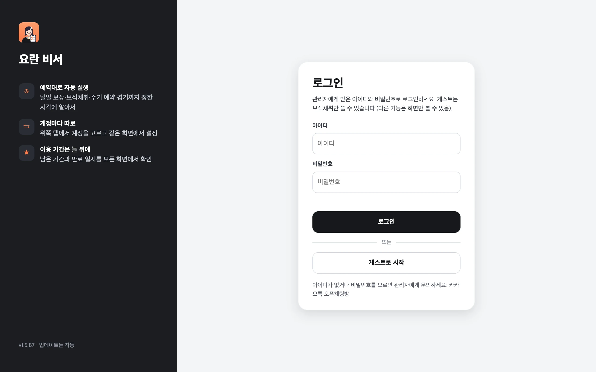

준비물
- 윈도우(64비트) PC 또는 맥 (Apple Silicon · Intel 모두), 또는 안드로이드 휴대폰 (8.0 이상, 베타 — 안드로이드 앱)
- Google Chrome (PC·맥) — 요란 비서가 계정마다 전용 Chrome 창을 띄워 게임을 조작합니다. 평소 쓰는 Chrome과는 분리되어 있습니다. 다른 설치(Node.js 등)는 필요 없습니다.
- 요란 비서 아이디 — 관리자에게 받습니다. 없으면 게스트로 보석채취만 쓸 수 있습니다.
- G123 게임 계정 — Google·Apple·Passkey·전화번호 등 평소 로그인하던 방법
다운로드 · 설치
컴퓨터(휴대폰)에 맞는 파일을 받으세요. 늘 최신 버전이 받아집니다.
맥 종류 확인: 화면 왼쪽 위 사과 메뉴 → 이 Mac에 관하여에서 "칩: Apple M…"이면 Apple Silicon, "프로세서: Intel…"이면 Intel입니다.
- 받은 RyoranMacro-Setup.exe를 실행합니다. "Windows의 PC 보호" 창이 뜨면 추가 정보 → 실행을 누르세요. 코드 서명이 없는 프로그램이라 나오는 경고입니다.
- 자동으로 설치되고 실행됩니다. 바탕화면과 시작 메뉴에 요란 비서 바로가기가 생깁니다. 관리자 권한은 필요 없습니다.
- 다음부터는 앱이 스스로 업데이트합니다. 새 설치 파일을 직접 실행해도 되고, 설정과 게임 로그인은 그대로 유지됩니다.
- zip 파일을 더블클릭해 압축을 풀고, RyoranMacro.app을 응용 프로그램 폴더로 옮깁니다. 응용 프로그램 폴더에 있어야 자동 업데이트가 됩니다.
- 처음 열 때 나오는 경고를 넘깁니다.
"Apple은 'RyoranMacro'에 악성 코드가 없음을 확인할 수 없습니다" 창이 뜨면 완료를 누르고, 시스템 설정 → 개인정보 보호 및 보안 아래쪽 RyoranMacro 항목 옆 그래도 열기를 누른 뒤 암호를 입력합니다. Apple 공증을 받지 않은 앱이라 나오는 경고입니다.
또는 터미널에서 한 번:
xattr -dr com.apple.quarantine /Applications/RyoranMacro.app - 앱이 열리면 로그인 화면이 나옵니다. 창을 닫아도 메뉴바의 다이아 아이콘으로 남아 예약을 지킵니다.
- 휴대폰에서 이 페이지를 열고 RyoranMacro.apk를 받습니다. 카카오톡 안에서 받기가 안 되면 오른쪽 위 ⋮ → 다른 브라우저로 열기 뒤에 받으세요.
- 받은 파일을 열어 설치합니다. "이 출처의 앱 설치 허용"을 묻으면 허용하고 돌아와 설치를 누릅니다. Play 프로텍트 경고가 나오면 세부정보 더보기 → 무시하고 설치를 누릅니다. Play 스토어에 없는 앱이라 나오는 안내입니다.
- 앱을 열고 알림을 허용합니다. 그다음은 PC와 같이 로그인 화면이 나옵니다. 화면마다 그림으로 보려면 모바일 설명서 → 설치를 보세요.
지금 쓰는 버전은 앱 왼쪽 메뉴 맨 아래에 v1.5.48처럼 표시됩니다. 안드로이드는 휴대폰 설정 → 애플리케이션 → 요란 비서에서 볼 수 있습니다.
요란 비서 로그인 · 등급
앱을 켜면 로그인 화면이 먼저 나옵니다. 관리자에게 받은 아이디·비밀번호로 로그인하거나 [게스트로 시작]을 누릅니다. 로그인은 다음에 켤 때도 유지되고, 계정 관리의 [로그아웃]으로 바꿀 수 있습니다.
- 남은 이용 기간과 만료 일시는 모든 화면 위쪽 오른쪽에 크게 보입니다 — 7일 안 남으면 노랑, 하루 안이면 빨강, 끝나면 진한 빨강.
- 기간이 끝나면 게스트(보석채취만)로 바뀌고, 연장하면 다음 확인(2시간마다) 때 원래 등급으로 돌아옵니다. 실행 중이던 기능은 끝까지 합니다.
- 인터넷이 끊겨도 마지막으로 확인한 등급으로 24시간까지는 그대로 씁니다.
- 아이디마다 쓸 수 있는 PC 대수가 정해져 있을 수 있습니다. PC를 바꿨다면 관리자에게 문의하세요.

| 등급 | 게임 계정 | 쓸 수 있는 기능 |
|---|---|---|
| 게스트 | 1개 | 보석채취만 (다른 기능은 화면만 볼 수 있음) |
| 일반 | 1개 | 유파 전투(유파 쟁탈전·학원 쟁패전·학원 교류전·사검귀 습격)·도장 연무 목표 순위·명장 쟁패전 편성을 뺀 모든 기능 |
| 프리미엄 | 5개 | 모든 기능 |
등급보다 계정이 많으면 계정 목록 위에서부터 그 수만큼만 실행됩니다. 계정 목록·설정·게임 로그인은 등급이 바뀌어도 그대로 남습니다.
게임 계정 연결 (처음 한 번)
요란 비서는 계정마다 따로 있는 전용 Chrome으로 게임을 조작합니다. 처음 한 번은 그 창에서 G123에 로그인해야 합니다.

- 왼쪽 메뉴의 계정 관리를 엽니다.계정이 더 필요하면 + 계정 추가(위쪽 계정 탭 옆 +도 같음)를 누릅니다. 이름은 바로 고칠 수 있습니다. 계정 추가는 목록에 계정만 만들고, 로그인을 누르기 전에는 전용 Chrome을 띄우지 않습니다.
- 그 계정의 [로그인]을 누릅니다.전용 Chrome이 뜨고 G123 "계정 전환" 창이 열립니다. 새 Chrome은 처음에 게스트 계정으로 튜토리얼이 보이는데, 신경 쓰지 않아도 됩니다.
- 평소 쓰던 방법(Google·Apple·Passkey·전화번호)으로 로그인합니다.그 계정으로 바뀝니다.
- 계정 관리에 ✓ 캐릭터 이름 [서버]가 보이면 준비 완료입니다.로그인은 다음에도 유지됩니다.
계정마다 연결된 캐릭터(처음 연동을 확인한 캐릭터)를 기억합니다. 게임이 다른 캐릭터(같은 G123 계정의 다른 서버나 다른 G123 계정)로 열려 있으면 그 캐릭터에 재화를 쓰지 않도록 그 계정의 예약을 하지 않고, 기록에 ⚠ 한 줄과 알림을 한 번 남깁니다. 게임에서 원래 캐릭터로 바꾸면 5분 안에 알아채고 못 한 예약을 이어서 합니다. 지금 캐릭터를 이 계정에 쓰려면 계정 관리에서 다시 로그인을 누르세요.
처음 설정 추천
기능 설정에서 계정마다 아래 순서로 켜 보세요. 한 계정을 다 맞춘 뒤 기능마다 [다른 계정에도 적용]으로 복사하면 빠릅니다.
- 일일 보상 켜기매일 06:00(바꿀 수 있음). 다이아를 쓸 항목(유파 보스 추가 도전·금화 구매·일일 상점 등)을 확인하세요.
- 보석채취 예약 켜기모든 계정이 같은 시각에 함께 시작합니다(예: 01:00). 다이아 별과 동시 배치 인원을 고르세요.
- 주기 예약 간격 고르기「오늘」 화면 오른쪽 「주기 예약」에서 바로 켜고 간격을 바꿉니다. 방치 수익 4시간, 농장 4시간처럼 기본값이면 충분합니다.
- 경기 예약 (프리미엄)유파 쟁탈전은 참가할 요일을 체크하고 목표 Pt를 정합니다(목표를 채우면 기본으로 본진으로 돌아가 편성만 유지, v1.5.124부터). 처음 몇 번은 게임 창을 지켜봐 주세요.
- [지금 실행]으로 한 번 확인켠 기능을 바로 돌려 보고, 「기록」에서 결과 한 줄을 확인합니다.
안드로이드 앱 베타
설치(알 수 없는 앱 허용 · Play 프로텍트) · 게임 계정 연결 · 배터리 설정 · 알림창 · 업데이트 · 자주 묻는 질문
PC가 없어도 안드로이드 휴대폰 하나로 씁니다. 기능·설정·예약·기록은 PC 앱과 같고, 화면만 휴대폰에 맞췄습니다. 게임은 앱 안의 보이지 않는 게임 창에서 돌아서, 요란 비서가 도는 동안에도 휴대폰으로 다른 일을 할 수 있습니다.


설치와 처음 설정
- 휴대폰에서 RyoranMacro.apk를 받아 설치합니다.순서는 다운로드 · 설치의 「안드로이드 설치」에 있습니다. 안드로이드 8.0 이상에서 됩니다.
- 앱을 열면 알림을 허용합니다.요란 비서가 뒤에서 도는 동안 알림 표시줄에 「요란 비서」가 보이고, 새 버전 안내도 알림으로 옵니다.
- 요란 비서 아이디로 로그인합니다.PC와 같은 아이디를 씁니다. 휴대폰은 PC와 따로 대수를 세니, 휴대폰을 처음 쓰거나 바꾸면 관리자에게 대수를 확인하세요.
- 계정 관리(아래 탭)에서 그 계정의 [로그인]을 누릅니다.게임 화면이 뜨면 PC 때처럼 G123 "계정 전환" → 평소 로그인 방법으로 로그인하고, 끝나면 휴대폰 뒤로 버튼으로 게임 화면을 닫습니다. 계정 관리에 ✓ 캐릭터 이름 [서버]가 보이면 끝입니다.
- 배터리 사용을 「제한 없음」으로 둡니다 (권장).휴대폰 설정 → 애플리케이션 → 요란 비서 → 배터리에서 「제한 없음」(또는 「최적화 안 함」)을 고릅니다. 휴대폰이 절전한다고 요란 비서를 멈추는 것을 막습니다.
- 기능 설정에서 쓸 기능을 켭니다.기능을 누르면 설정이 열리고, ‹ 기능 목록이나 뒤로 버튼으로 목록에 돌아갑니다.
PC 앱과 다른 점
- 게임 창 — Chrome 대신 앱 안의 보이지 않는 게임 창을 씁니다. 「오늘」의 게임 창 열기로 볼 수 있고, 뒤로 버튼으로 닫습니다. 요란 비서가 도는 동안에는 지켜보기만 해 주세요. 보다가 홈으로 나가거나 화면을 꺼도 3분 안에 돌아오면 보던 게임 화면이 그대로 이어지고, 3분 넘게 나가 있으면 게임 화면이 닫힙니다(기능이 돌고 있으면 뒤에서 이어서 하고, 끝나면 바로 게임 창을 닫음). 다시 보려면 게임 창 열기를 누르세요(v1.5.115부터, v1.5.113·v1.5.114에서는 잠깐만 내려도 돌아오면 게임이 처음부터 다시 떴습니다).
- 뒤에서 계속 — 앱 화면을 닫아도(뒤로·홈), 화면이 꺼져도 알림 표시줄의 「요란 비서」로 남아 예약을 지킵니다. 알림에는 지금 실행 중인 기능(없으면 「대기 중」)과 다음 예약이 보입니다. 휴대폰을 다시 켜면 앱 화면을 열지 않고 뒤에서 다시 시작합니다. 이것은 계정 관리의 휴대폰을 켤 때 요란 비서 자동 시작으로 끌 수 있습니다(끄면 앱을 열 때 시작하고, 놓친 예약은 그때 이어서 함).
- 요란 비서 끄기 — 알림 표시줄의 「요란 비서」 알림을 펼쳐 요란 비서 종료를 누릅니다. 실행 중인 기능도 멈춥니다. 앱을 다시 열면(또는 화면의 다시 시작) 다시 켜집니다.
- 휴대폰 사용 — 요란 비서가 도는 동안에도 다른 앱을 평소처럼 쓸 수 있습니다. 기능이 도는 동안에는 게임 계정 하나에 메모리를 1GB쯤 쓰고 배터리와 데이터를 씁니다. 기능이 끝나고 1분이 지나면 게임 창을 닫아 메모리를 돌려주고, 다음 기능 때 다시 엽니다(게임 로그인은 그대로). 기능이 끝나도 게임 창이 남던 경우를 v1.5.114에서 고쳤습니다.
- 같은 게임 계정 — 요란 비서가 쓰는 G123 계정으로 휴대폰에서 직접 게임하면 PC 때와 같이 서로 접속이 끊깁니다.
- 게임 계정 수 — 휴대폰 앱은 게임 계정을 5개까지(계정 1~5) 씁니다. 필요 없는 계정은 계정 관리에서 삭제 → 확인으로 목록에서 뺍니다.
- 기록 보내기 — 「기록」의 로그 폴더 열기를 누르면 날짜별 로그를 휴대폰 다운로드/RyoranMacro 폴더에 저장하고 파일 앱을 엽니다. 문제가 있으면 그 파일을 카카오톡 등으로 보내 주세요.
- 업데이트 — 앱이 1시간마다 새 버전을 확인해 받아 둡니다. 안드로이드 12 이상이고 "이 출처의 앱 설치 허용"이 켜져 있으면, PC처럼 실행 중인 기능이 끝난 뒤(15분 안에 경기가 있으면 경기 뒤) 확인 창 없이 자동으로 설치하고 요란 비서가 다시 켜집니다(v1.5.110부터). 게임 화면을 띄워 보고 있는 동안에는 설치를 미루고, 30분 넘게 미뤄지면(기능이 계속 돌면 3시간) 진행 상황 알림에 「새 버전 vX · 게임 화면을 닫으면 설치」가 뜹니다. 누르면 바로 설치합니다(v1.5.114부터, 게임 화면을 닫았는데도 일부 휴대폰에서 계속 미루던 문제는 v1.5.133에서 고침). 새 버전을 받았는지, 설치를 기다리거나 못 하는 까닭은 계정 기록에 한 줄씩 남습니다. 자동으로 설치할 수 없으면(안드로이드 11 이하, 허용이 꺼짐, 휴대폰이 확인 창을 요구함) 진행 상황 알림에 「새 버전 설치 필요 · 눌러서 설치」가 떠 있으니 눌러 주세요(확인 창이 뜨면 업데이트). 안드로이드 12 이상이면 알림·안내를 눌러도 확인 창 없이 바로 설치하고, 설치 확인 창이 열려 있으면 자동 설치가 그 답을 기다립니다(v1.5.123부터). 최신 갤럭시(S25 등)처럼 앱이 스스로 하는 설치를 막는 휴대폰은 알림을 누르면 안드로이드 설치 화면이 뜨니 업데이트를 누르세요(v1.5.133부터). v1.5.132 이하에서 이렇게 막혔으면 RyoranMacro.apk를 한 번 받아 덮어 설치하세요(자세히). v1.5.109 이하에서는 이번 한 번만 직접 설치하면 그다음 버전부터 자동입니다. 설정과 게임 로그인은 그대로입니다.
- 게임 계정 수 — 등급의 계정 수 안에서 최대 5개까지 씁니다.
- 일부 안드로이드 휴대폰(주로 11~12, Android System WebView가 오래된 경우)에서 앱이 열리자마자 꺼지던 문제는 v1.5.111에서 고쳤습니다. 그 전 버전이 켜지지 않는다면 휴대폰을 한 번 다시 켜고 「새 버전」 알림을 누르거나, RyoranMacro.apk를 받아 덮어 설치하세요(문제가 생겼을 때).
오늘
앱을 열면 처음 보이는 화면입니다. 왼쪽 메뉴와 위쪽 막대는 모든 화면에 그대로 있습니다.

- 1왼쪽 메뉴 — 오늘 · 기능 설정 · 일정표 · 이벤트 · 기록 · 계정 관리. 실행 중인 계정 수가 「오늘」 위에 숫자로 붙습니다.
- 2계정 탭 — 누르면 그 계정의 설정·기록으로 바뀝니다. 계정마다 지금 상태(대기 중 · 실행 중 · 로그인 전 · 로그인 확인 필요)가 보입니다.
- 3계정 추가 — 게임 계정을 하나 더 등록합니다. 그 계정의 [로그인]을 누를 때 전용 Chrome이 뜹니다.
- 4남은 이용 기간 — 아이디 · 등급 · 만료 일시. 누르면 계정 관리로.
- 5지금 상태 — 실행 중이면 무엇을 하는지와 [중지], 언제든 [게임 창 열기].
- 6오늘 일정 — 오늘 한 일(결과 한 줄) · 지금 · 다음 예약. 누르면 그 기능 설정으로.
- 7주기 예약 — 방치 수익·농장 등을 여기서 바로 켜고 간격을 바꿉니다.
계정이 여러 개면 위쪽에 「모든 계정」 카드가 나와 계정마다 상태와 다음 예약을 함께 보여 줍니다. 아래쪽에는 이번 주 이벤트 요약이 있습니다.
기능 설정
모든 기능이 왼쪽 목록에 묶음별로 있고, 누르면 오른쪽에 그 기능의 설정이 맨 위부터 열립니다. 목록과 설정은 따로 스크롤되고, 설정 위쪽의 기능 이름은 그 자리에 고정됩니다. 기능마다 하는 일은 기능 안내를 보세요.

- 1기능 목록 — 스위치로 바로 켜고 끕니다. 아래 줄은 지금 설정 요약.
- 2설정 패널 — 예약 시각·간격, 다이아 사용 등. 바꾸면 바로 저장됩니다.
- 3켜기와 다음 실행 — 켜짐/꺼짐과 다음 실행 시각.
- 4지금 실행 — 예약을 기다리지 않고 바로 실행. 실행 중이면 [중지].
- 패널 아래 [다른 계정에도 적용]을 누르고 계정을 고르면 그 기능의 켜기·설정을 그대로 복사합니다.
- 동작 보기를 펼치면 그 기능이 하는 일을 순서대로 볼 수 있습니다.
- 그 계정이 실행 중인 동안에는 실행 중인 기능의 설정을 바꿀 수 없습니다(예약 시각은 바꿀 수 있음).
- 다이아를 쓰는 항목에는 다이아 표시가 붙어 있습니다.
- 이벤트에 묶인 기능(연회 참가·카드 게임·각력 단련 등)에는 그 이벤트가 열려 있으면 이번 이벤트, 끝났으면 이벤트 종료가 붙습니다. 끝난 기능은 켜 두어도 할 일이 없으면 그냥 넘어가고, 같은 이벤트가 다시 열리면 다시 합니다.
일정표
고른 계정의 이번 주 요일별 예약(매일 · 경기 · 요일 예약)과 켠 주기 예약을 한눈에 봅니다. 항목을 누르면 그 기능 설정으로 갑니다.
경기 시각(19:55)에 다른 기능이 돌고 있으면 어떻게 되는지는 예약은 이렇게 돌아갑니다를 보세요.

이벤트
지금 열린 이벤트(끝나는 순서 · 남은 시간)와 요란 비서가 그 무료 보상을 받는지 보여 줍니다. 일일 보상이나 주기 예약이 한 번 돈 뒤부터 나옵니다.
- 이벤트 아이템 자동 사용: 추첨권·모집권 등 이벤트 아이템을 씁니다. 끄면 무료 보상만 받습니다.
- 이벤트 추첨·모집 횟수: 이벤트마다 몇 회까지 뽑을지. 기본 0은 뽑지 않고, 비우면 아이템을 모두 씁니다. 이미 쓰던 계정은 설정 그대로입니다.
- 요란 비서가 아직 모르는 새 종류의 이벤트는 확인 필요, 열린 지 24시간이 안 된 이벤트는 새로 열림으로 표시됩니다. 새 버전을 설치한 직후에도 열려 있는 이벤트면 「이번 이벤트」로 보입니다(v1.5.119부터, 그 전에는 잠깐 「이벤트 종료」로 잘못 보였음).

기록
고른 계정의 오늘 실행 기록입니다. 실행마다 시각 · 기능 · 완료 / 건너뜀 / 실패와 결과 한 줄이 보이고, 누르면 전체 로그가 펼쳐집니다.
- [건너뜀·실패만]으로 문제가 있었던 것만 거릅니다.
- [로그 폴더 열기]로 지난 날짜의 로그 파일(
계정1/날짜.log…)을 봅니다. - 「건너뜀」은 그 계정에서 아직 할 수 없는 것(예: 열리지 않은 콘텐츠, 유파가 신청하지 않은 경기)이라 걱정하지 않아도 됩니다.

예약은 이렇게 돌아갑니다
- 한 계정은 한 번에 한 기능만 돕니다. 예약이 겹치면 시각이 먼저 된 것부터 하나씩, 앞의 기능이 끝난 뒤 시작합니다. 다른 계정은 동시에 돕니다.
- 경기는 예외로 경기 시각에 시작합니다(명장 쟁패전 편성 시각도 같음). 그때 보석채취·일일 보상이 돌고 있으면 멈췄다가 경기가 끝난 뒤 가장 먼저 이어서 하고, 그 밖의 기능이면 끝난 뒤 바로 시작합니다.
- 놓친 예약: 앱이나 컴퓨터가 꺼져 있었으면(절전 포함) 켜지는 대로 같은 순서로 실행합니다 — 보석채취·일일 보상·속성 시련·검희 특훈·팀 경기장은 그날 자정 전까지, 흑암 강림은 다음 예약일 전까지. 경기는 시작 후 1시간이 지나면 건너뛰므로 경기 시간에는 절전되지 않게 해 주세요.
- 창을 닫아도 트레이(윈도우: 작업 표시줄 오른쪽 / 맥: 메뉴바)의 다이아 아이콘으로 남아 예약을 지킵니다. 아이콘 메뉴의 종료로 완전히 끄면 예약이 동작하지 않습니다.
- Chrome이나 게임이 꺼져 있어도 실행할 때 자동으로 띄워서 접속합니다. 게임의 공지·이벤트 팝업과 절전 화면은 자동으로 닫습니다.
- G123 게임 페이지는 띄운 지 24시간이 되면 스스로 다시 불러오고, 그때 하던 작업은 끊깁니다. 그래서 기능을 시작할 때 페이지를 띄운 지 20시간이 넘었으면 먼저 다시 불러온 뒤 시작합니다(로그 「G123 페이지가 N시간 지나 미리 다시 불러옴」, 경기·작업 도중에는 하지 않음, v1.5.118부터).
- 다른 곳에서 같은 게임 계정으로 접속하면 요란 비서 쪽 게임이 끊기고, 요란 비서는 30분을 기다렸다가 다시 접속합니다(경기는 바로 다시 접속). 더 일찍 이어 가려면 전용 Chrome 게임 창에서 [확인]을 누르세요.
자동 업데이트
- 새 버전이 나오면 앱이 스스로 받아 업데이트합니다(1시간마다 확인). 실행 중인 기능이 끝난 뒤 잠깐 꺼졌다 다시 켜지고, 밀린 예약은 이어서 합니다.
- 경기 15분 전부터 경기가 끝날 때까지는 업데이트하지 않습니다.
- 맥은 앱이 응용 프로그램 폴더에 있어야 자동으로 바뀝니다. 바꿀 수 없으면 창 위쪽에 안내가 나오니 다운로드에서 받아 설치하세요.
- 안드로이드 앱은 새 버전을 받아 두고, 안드로이드 12 이상이면 기능이 끝난 뒤 확인 창 없이 자동으로 설치합니다(v1.5.110부터, v1.5.109 이하에서는 이번 한 번만 직접 설치). 게임 화면을 보고 있는 동안에는 설치를 미루고, 오래 미뤄지면 진행 상황 알림에 「새 버전 vX · 게임 화면을 닫으면 설치」가 뜹니다(v1.5.114부터). 자동으로 설치할 수 없으면 알림이나 앱 위쪽 안내를 눌러 업데이트를 누르세요(안드로이드 앱). 최신 갤럭시(S25 등)는 이때 안드로이드 설치 화면이 뜹니다(v1.5.133부터, 자세히).
- 최소 버전: 관리자가 정한 버전보다 낮은 앱은 기능을 실행하지 않고 화면 맨 위에 「이 버전은 더 이상 동작하지 않습니다」 안내를 띄웁니다. 업데이트는 막지 않으니 새 버전이 설치되면 바로 다시 동작합니다. 막힌 동안은 실행 중인 기능만 없으면 경기 시간과 상관없이 바로 업데이트합니다(v1.5.110부터). PC는 자동 업데이트를 기다리거나 다운로드에서 받고, 휴대폰은 알림에서 업데이트하세요.
- 로그인한 앱은 등급을 확인할 때 이 기기의 업데이트 상태 한 줄(지금 버전, 새 버전을 받았는지, 받기·설치를 못 한 까닭)을 함께 보냅니다. 업데이트가 안 될 때 관리자가 까닭을 보고 도와드리기 위한 것입니다(v1.5.127부터).
- 설정과 게임 로그인은 그대로 유지됩니다. 무엇이 바뀌었는지는 릴리즈 페이지에 있습니다.
문제가 생겼을 때
먼저 「기록」에서 실패한 실행을 눌러 전체 로그를 확인하세요. 오류가 나면 로그에 오류: …로 남고, 같은 폴더에 그 순간의 화면이 error-날짜_시각.png로 저장됩니다(유파 쟁탈전은 gvg-, 일일 보상은 daily- 등으로 시작). 관리자에게 문의할 때 함께 보내 주세요.
| 로그 폴더 | |
|---|---|
| 윈도우 | %APPDATA%\RyoranMacro\logs\계정1 … |
| 맥 | ~/Library/Logs/RyoranMacro/계정1 … |
로그에 「게스트 계정이라 중단」
그 계정의 전용 Chrome이 G123에 로그인되어 있지 않습니다. 계정 관리에서 [로그인]으로 로그인하세요.
로그에 「메인 화면에 트루 쉐도우 버튼이 없음」
전용 Chrome에 다른 계정(또는 트루 쉐도우가 아직 열리지 않은 계정)이 로그인되어 있습니다. 계정 관리에서 로그인된 캐릭터를 확인하세요.
휴대폰에서 요란 비서 앱이 열리자마자 꺼져요
일부 안드로이드 휴대폰(주로 11~12, Android System WebView가 오래된 경우, 예: 갤럭시 노트10+)에서 v1.5.73~v1.5.110에 있던 문제로, v1.5.111에서 고쳤습니다. 앱이 켜지지 않아 앱에서 업데이트할 수 없으니 둘 중 하나로 설치하세요.
- 휴대폰을 한 번 다시 켜면 1분쯤 뒤 「요란 비서 새 버전」 알림이 뜹니다. 눌러서 설치합니다.
- 휴대폰에서 RyoranMacro.apk(v1.5.111 이상)를 받아 그대로 덮어 설치합니다. 지우지 않아도 되고 설정·게임 로그인은 그대로입니다.
휴대폰 앱에 「요란 비서 화면을 열 수 없습니다」가 떠요
「요란 비서 화면을 열 수 없습니다」가 뜨면 휴대폰의 「Android System WebView」가 꺼져 있거나 고장 난 것입니다. WebView 업데이트 (Play 스토어)를 눌러 업데이트하거나 설정 → 애플리케이션에서 켠 뒤 앱을 다시 여세요(v1.5.112부터, 그 전에는 앱이 바로 꺼졌습니다). 예약을 도는 요란 비서 서비스는 그대로 켜져 있습니다.
휴대폰 앱이 v1.5.110~v1.5.112에서 업데이트되지 않아요
v1.5.110~v1.5.112는 게임 화면을 보다가 홈으로 나가 둔 채 게임 창이 남아 있으면 알림 없이 자동 설치를 계속 미뤘습니다(v1.5.114에서 고침). 최근 앱(□)에서 「계정 N 게임」 창을 열었다가 뒤로 가기로 닫거나 휴대폰을 다시 켜면 1~2분 안에 설치됩니다. 앱 위쪽 「새 버전」 안내를 눌러 업데이트를 눌러도 됩니다(모바일 설명서).
로그에 「게임 응답 없음」
게임이 30초 넘게 답하지 않으면 진단 한 줄(페이지·게임 타이머·대화상자, 휴대폰은 화면·게임 웹뷰 상태, 게임 연결이 닫혔으면 G123이 페이지를 스스로 다시 불러온 시각과 띄운 지 몇 시간이었는지)을 남기고 게임을 다시 불러와 그 작업을 한 번 더 합니다. 또 답하지 않으면 남은 작업은 하지 않고 30분 뒤에 다시 합니다(명장 쟁패전 편성은 2분 뒤). 계속되면 그 로그를 보내 주세요.
로그에 「게임 창이 화면에 보이지 않음」
전용 Chrome 창을 화면에 보이게 두면 다음 재시도 때 이어서 진행합니다.
로그에 「Chrome(chrome.exe)을 찾을 수 없음」 (윈도우)
Chrome이 기본 위치(Program Files 또는 사용자 AppData)에 설치되어 있어야 합니다.
아침까지 「실행 중」으로 남아 있어요
오류가 연달아 나면 다시 시도하는 간격을 1분씩 늘려 최대 5분마다 계속 시도합니다. 로그를 확인하고, 필요하면 「오늘」 화면의 [중지]를 누르세요.
기능이 자물쇠로 잠겨 있어요
등급이나 이용 기간 때문에 쓸 수 없는 기능입니다. 누르면 이유가 나옵니다. 등급·연장은 관리자에게 문의하세요.
삭제
윈도우
설정 → 앱 → 설치된 앱(또는 제어판의 프로그램 제거)에서 요란 비서 → 제거를 누릅니다. "설정, 로그, 전용 Chrome 로그인 정보도 함께 삭제할까요?" 창에서 예를 누르면 모두 지우고, 아니요면 다시 설치했을 때 그대로 쓸 수 있습니다. (먼저 전용 Chrome 창을 닫아 주세요)
맥
메뉴바의 다이아 아이콘 → 종료로 앱을 끈 뒤 응용 프로그램 폴더의 RyoranMacro.app을 휴지통에 넣습니다. 설정·로그·로그인 정보까지 지우려면 Finder에서 ⇧⌘G로 아래 폴더를 찾아 지웁니다.
~/Library/Application Support/RyoranMacro~/Library/Logs/RyoranMacro~/.ryoran-macro
안드로이드
휴대폰 설정 → 애플리케이션 → 요란 비서 → 삭제를 누릅니다(앱 아이콘을 길게 눌러 삭제해도 같음). 설정·기록·게임 로그인도 함께 지워집니다. 휴대폰 다운로드/RyoranMacro에 내보낸 로그는 남으니 필요 없으면 지우세요.